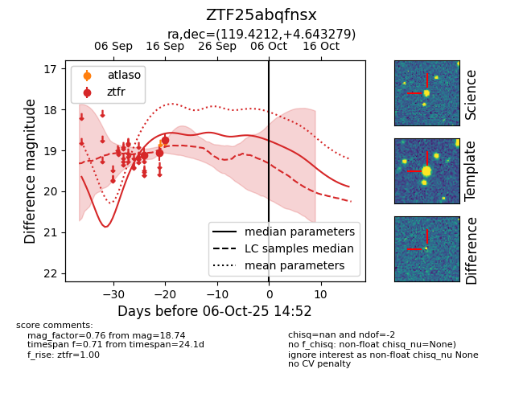
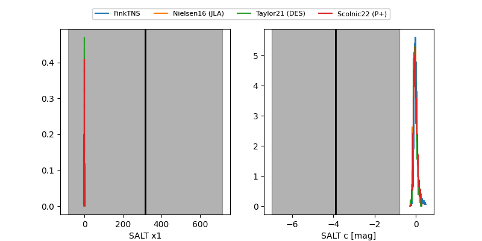

FINK: ZTF25abqfnsx
Lasair: ZTF25abqfnsx
ALeRCE: ZTF25abqfnsx
ZTF25abqfnsx (ztf,fink)
equatorial (ra, dec) = (119.4212,+4.64328)
galactic (l, b) = (216.3765,+16.84418)


last ztfr=18.74
3 ztfr detections